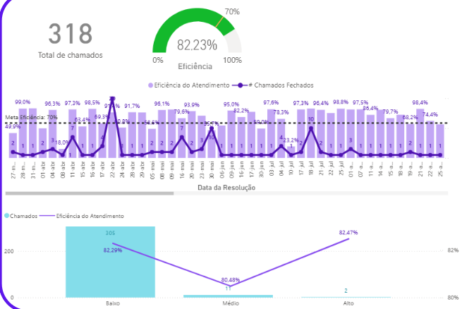

Atendimento
Help Desk e Service Desk
Atendimento presencial e remoto à operação, investigação estruturada de ocorrências, escalonamento de incidentes e resolução de mais de 300 chamados ao longo do contrato de aprendizagem na Motiva ViaLagos.